音楽
「目玉焼きには何をかける？」と聞かれた際に、「音楽をかける」と答えてしまう自分の好きなジャンルは 、邦ロック や、偶然見つかる マイナー系アーティスト。 メロディーやノリの良さに惹かれることが多く、特におしゃれな曲が大好き。もちろん有名なアーティストも聴くけど、 ここでは、松嶋が最もハマっている 3組のアーティストをランキング形式で紹介します。
1位：Chilli Beans.
女性3人組で最も推しているバンド、チリビーンズ。世界観のおしゃれさ、抜け感、かわいさ、かっこよさ、 すべてが唯一無二。飾らない空気感やライブ途中のMCの適当さも魅力。上手く表現できないんだけど、めちゃくちゃ良い。 Vaundyとは音楽塾の同期で、最新曲の『that's all i can do』はドラマ「じゃあ、あんたが作ってみろよ」の挿入歌に起用されている。
おすすめ曲： シェキララ / lemonade / rose feat. Vaundy / Tremolo / アンドロン / escape / See C Love / School / This way
 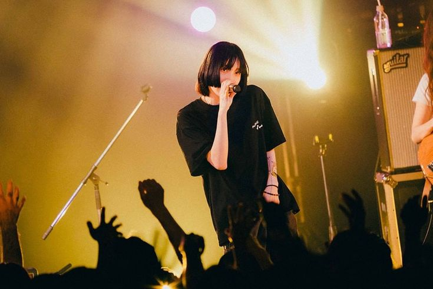
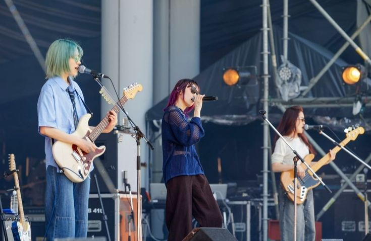
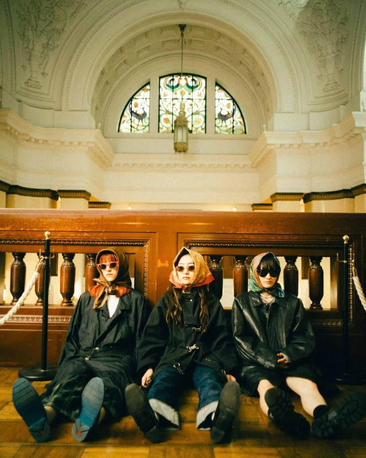
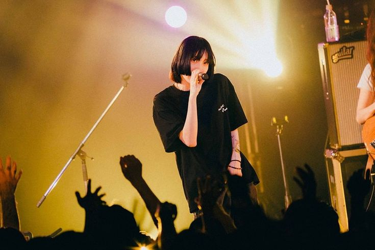
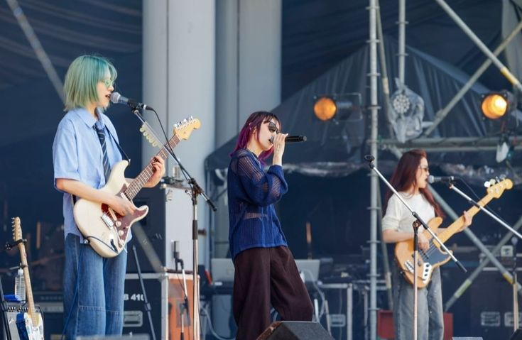
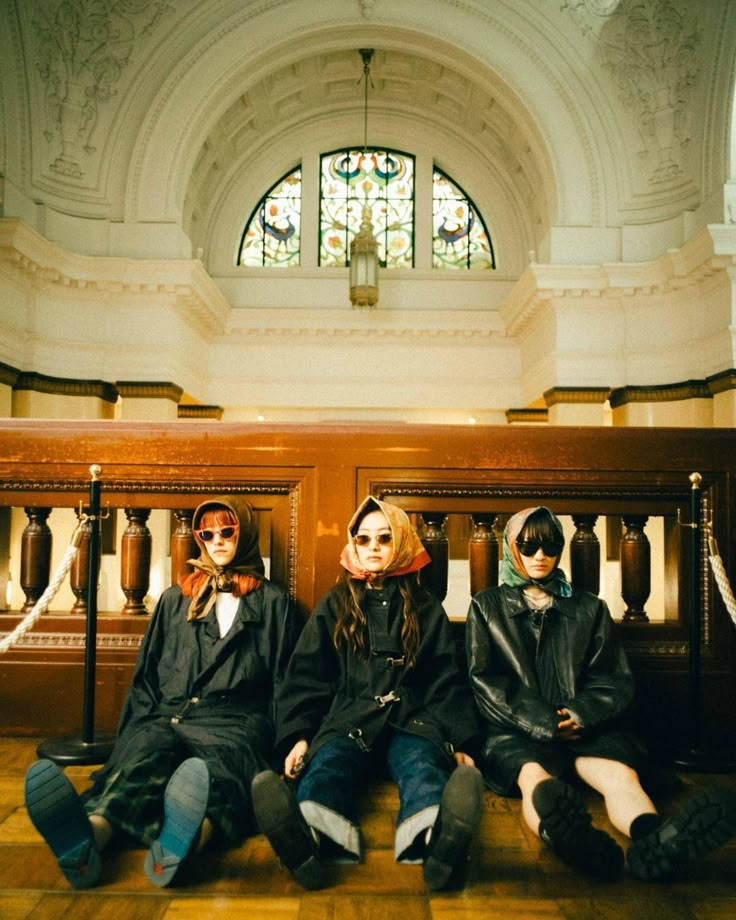
 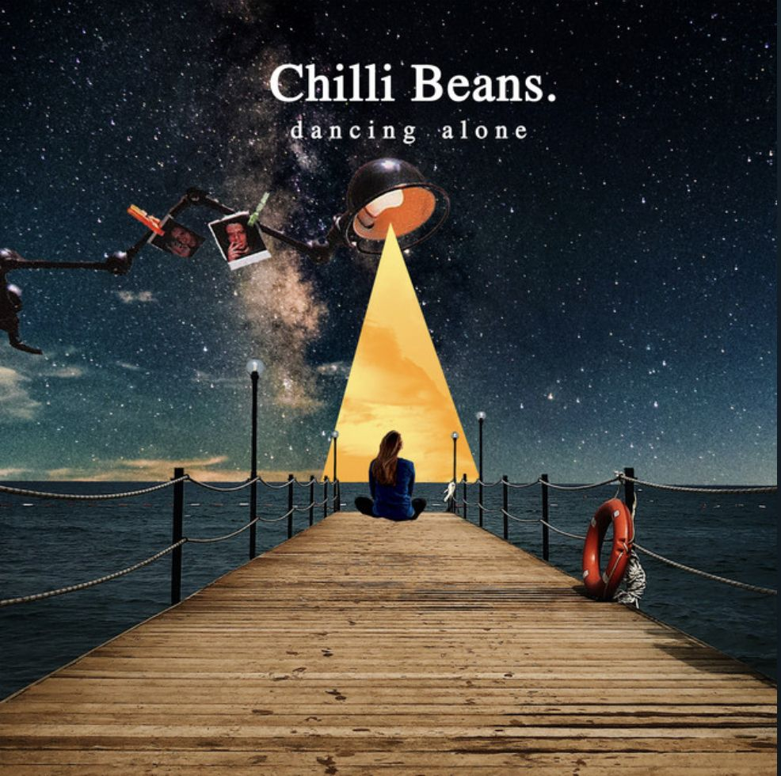
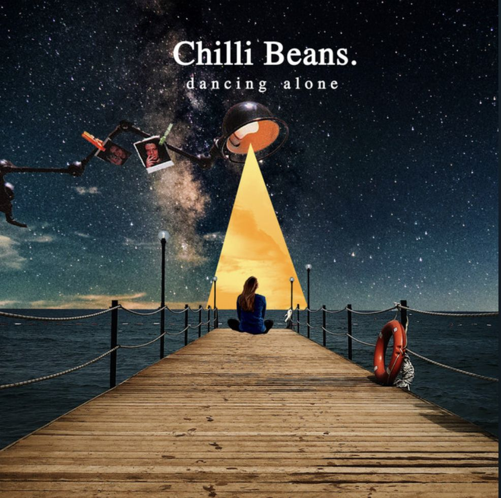
 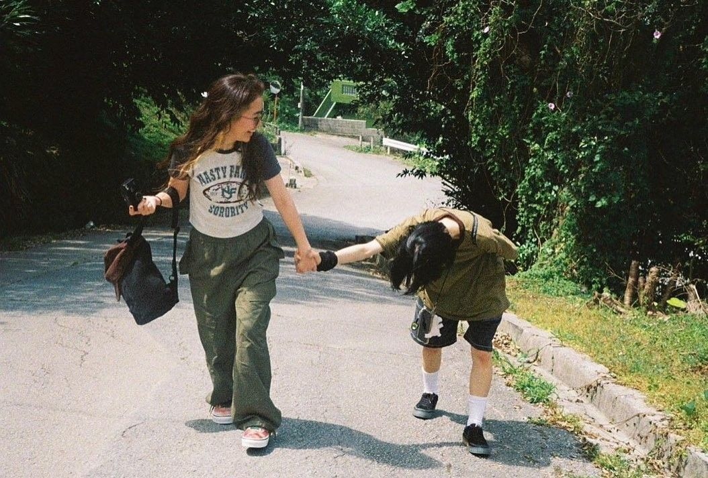
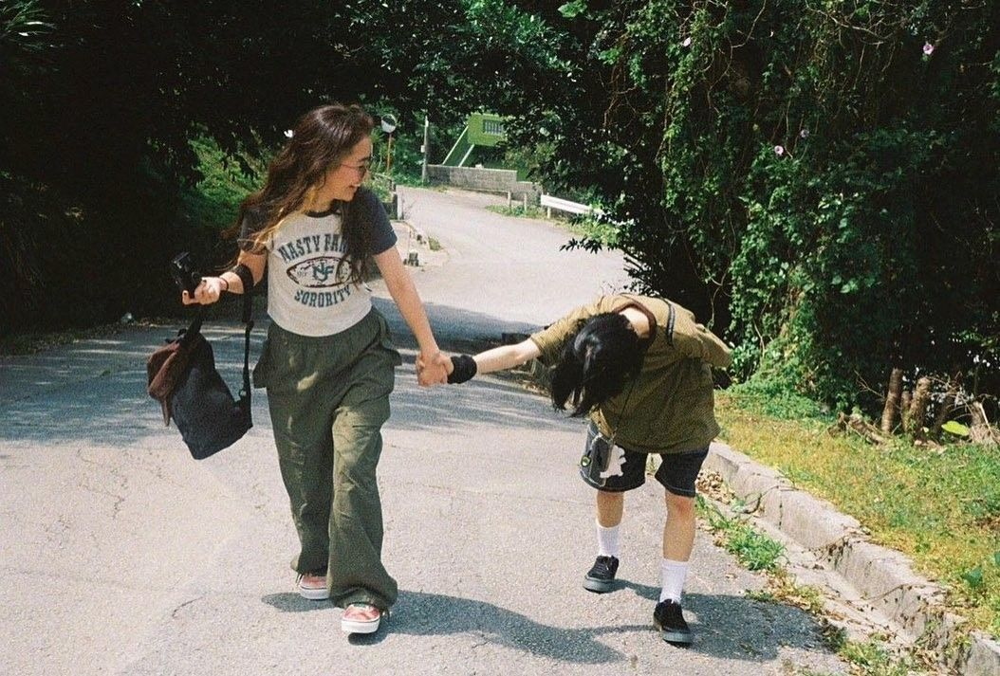

2位：Chevon
シェボンは北海道札幌発のスリーピースバンド。ライブの爆発力と中毒性のある楽曲が魅力。 2025年11月にメジャーデビューを果たし、一気に勢いを増しているバンド。 曲のオシャレさも間違いなく、今年は色んなフェスでお世話になった。ライブ行きたい。
おすすめ曲： サクラループ / ダンス・デカダンス / セメテモノダンス / 薄明光線 / No.4 / 銃電中


3位：Tele
テレはとにかく歌詞とフレーズのセンスが抜群。 何気ない言葉なのに心に刺さるラインが多く、松嶋の「めっちゃ良いじゃん」を連発してくるアーティスト。 高校生も絶対好きになると思う！「タコピーの原罪」のエンディングも担当した。
おすすめ曲： 誰も愛さない人 / 花瓶 / ロックスター / Veranda / 硝子の線 / 残像の愛し方 / バースデイ / 初恋 / カルト / 私小説
 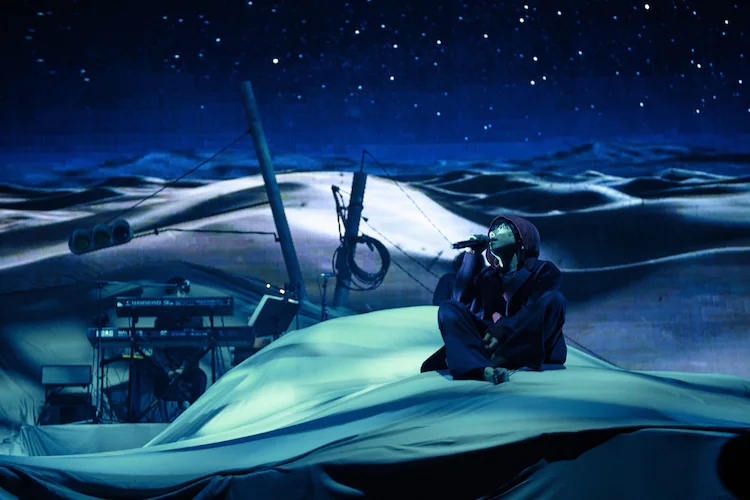
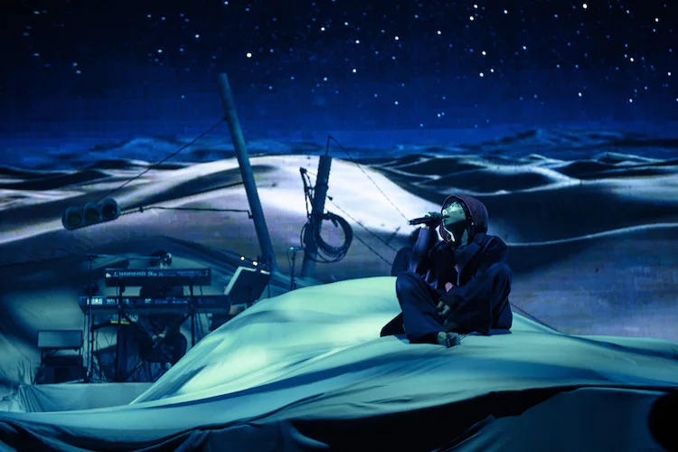
 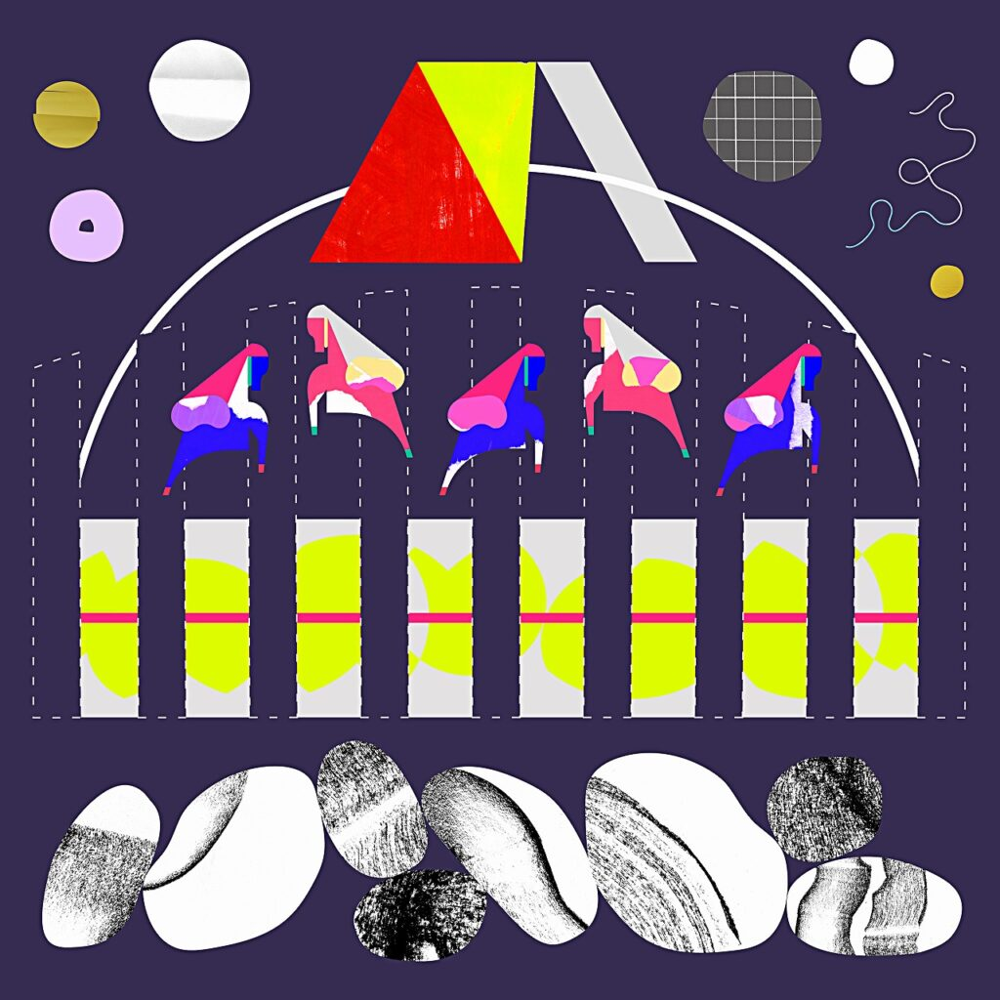
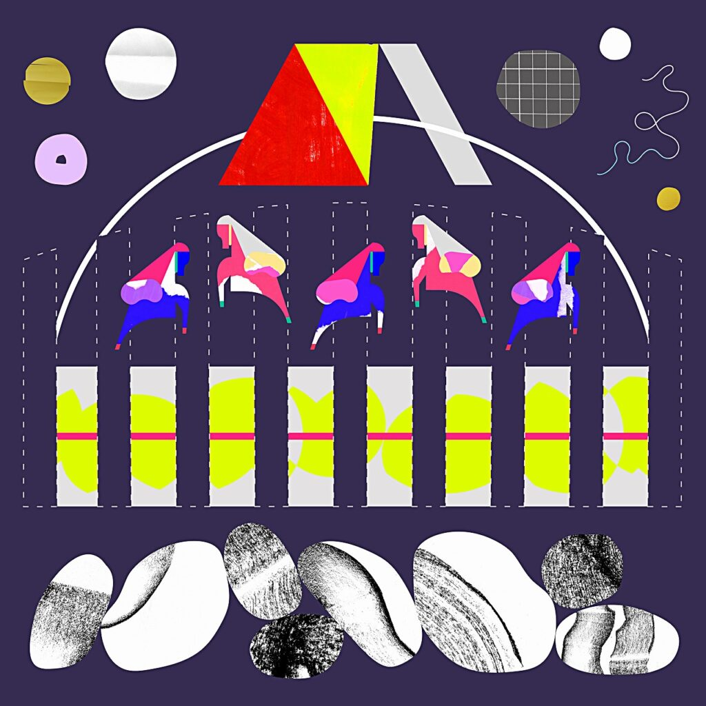